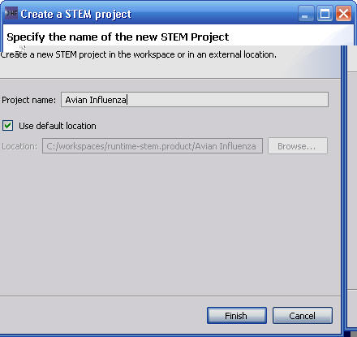

The New STEM Project Wizard is used to create and define the properties of a new STEM Project. A Project Name must be provided in order to be able to click "Finish". The Location of the STEM Project can be changed or can remain at the default location.
